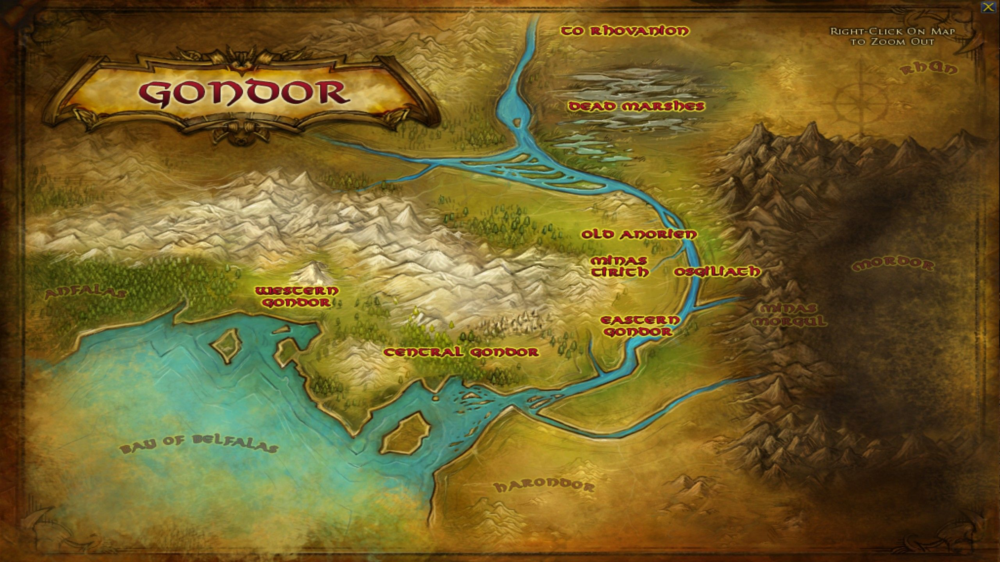
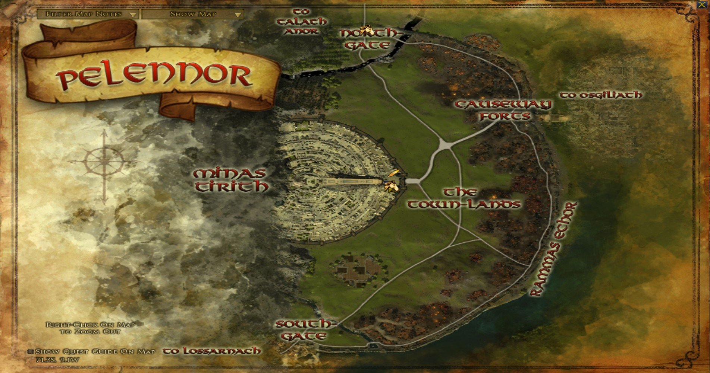
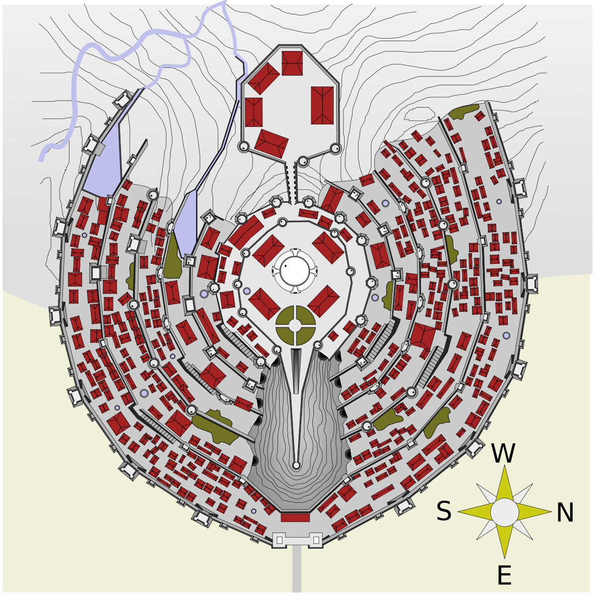

Se encuentra al oeste de Osgiliath donde terminan las montañas blancas que dividen la frontera
entre el reino de Gondor y el reino de Rohan.
Ubicación Geografia

Se encuentra rodeada por una enorme muralla conocida como Rammas Echor, que protege a los Campos de
Pelennor donde existen varias granjas que abastecen a la población de la ciudad.

A su vez el reino de Gondor se encuentra en la parte central del continente de Endor
en el planeta Arda

Estructura
Minas Tirith fue construida en siete niveles sobre la Colina de la Guardia, de 213 metros de altitud. Cada nivel poseía
su propia muralla y una sola puerta, de forma que la puerta de cada círculo daba a una dirección distinta de la
inferior, empezando por la Gran Puerta, orientada al este. Justo detrás de esta gran puerta se elevaba un gran bastión
de piedra con una arista aguzada como la quilla de un barco, con una altura de setecientos pies (doscientos metros), y
que llegaba hasta el muro del séptimo círculo, que limitaba con la Ciudadela.
En el extremo superior del risco, se podían y ver las Grandes Puertas justo debajo. Según estimaciones de K.Winn Fonstad, en su Atlas, Minas Tirith podría tener un quilómetro de ancho, tomando como patrón un diámetro de 50 metros para la Torre Blanca (cuya altura sería de unos 90 metros, sesenta menos que Orthanc).
Siguiendo con esas estimaciones, las murallas para tamaña obra de proporciones épicas serían imponentes, y mayores que las de la fortaleza de Helm. La muralla exterior de la ciudad se construyó con la misma piedra negra prácticamente indestructible de Orthanc, mientras que las de los siguientes círculos se alzaron sobre grandes terraplenes de tierra. Las siete murallas, siempre según K.W.Fonstad, sumaban más de doce quilómetros de defensa, y para construirse tendrían que haber sido necesarios más de dos millones de toneladas de piedra.
En el extremo superior del risco, se podían y ver las Grandes Puertas justo debajo. Según estimaciones de K.Winn Fonstad, en su Atlas, Minas Tirith podría tener un quilómetro de ancho, tomando como patrón un diámetro de 50 metros para la Torre Blanca (cuya altura sería de unos 90 metros, sesenta menos que Orthanc).
Siguiendo con esas estimaciones, las murallas para tamaña obra de proporciones épicas serían imponentes, y mayores que las de la fortaleza de Helm. La muralla exterior de la ciudad se construyó con la misma piedra negra prácticamente indestructible de Orthanc, mientras que las de los siguientes círculos se alzaron sobre grandes terraplenes de tierra. Las siete murallas, siempre según K.W.Fonstad, sumaban más de doce quilómetros de defensa, y para construirse tendrían que haber sido necesarios más de dos millones de toneladas de piedra.
